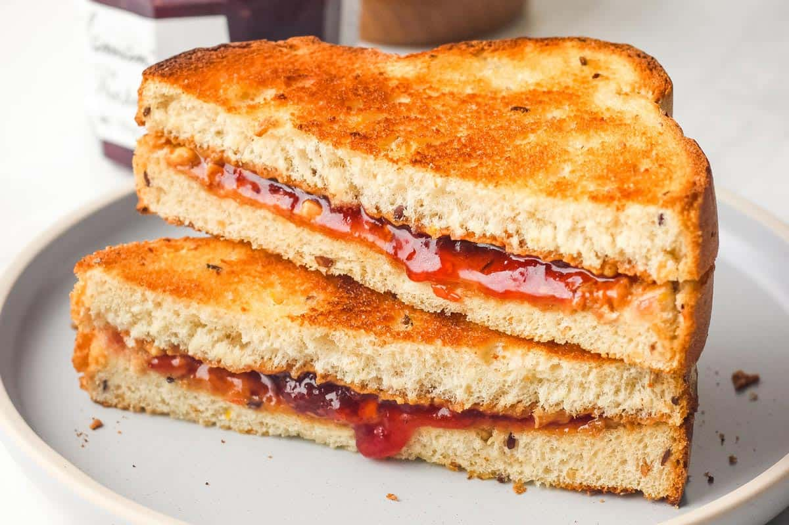

Description
This peanut butter and jelly sandwich is one of my favorite sandwich.
It has the perfect balance of ingredients and looks great when made right.
Ingredients
- 2 slices of bread (your choice)
- 1 jar of jelly (your choice, I use strawberry)
- 1 jar of creamy peanut butter
- A butter knife
- A sharp knife
- A cutting board
Directions
- Lay both slices of bread next to each other on a cutting board.
- With the butter knife, spread a 1/8 inch layer of peanut butter on the left side.
- On the right side, spread a 1/8 inch layer of jelly.
- Carefully place the two halves together so that the jelly is on top.
- With the sharp knife, carefully cut the sandwich in half. Optional: Toast bread before cutting.